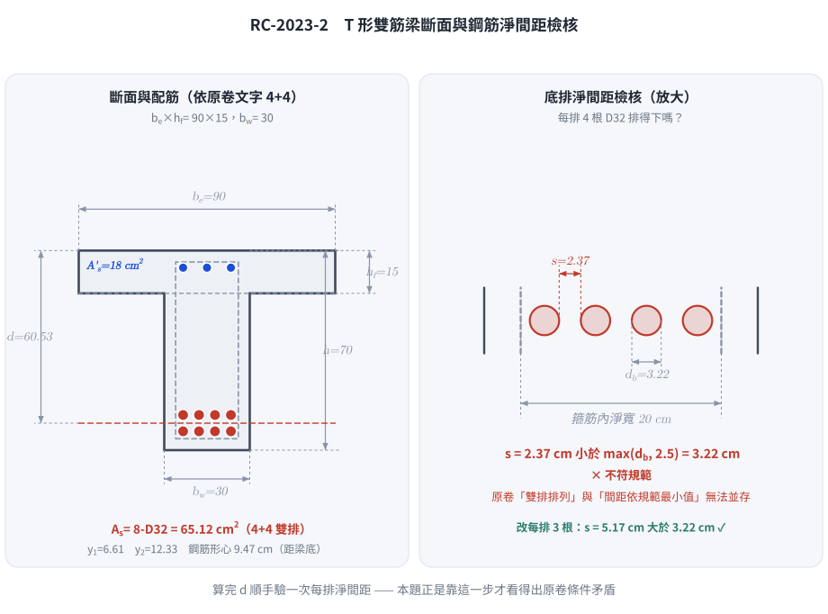
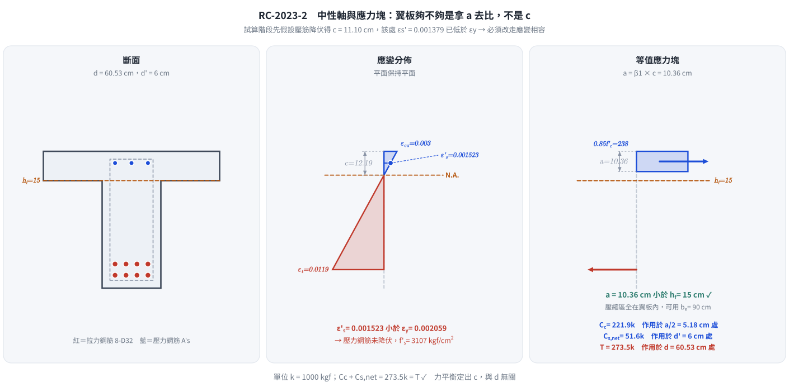
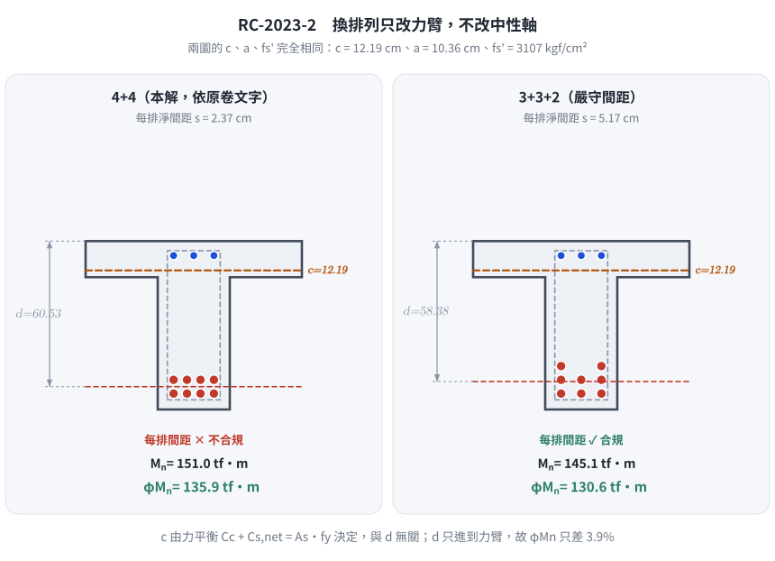

📄 題目正本：考卷原文・附圖・判讀清單（已確認）
RC-2023-2 題目正本
本檔只記錄考卷上寫了什麼、圖上畫了什麼，不含任何解法。解析見同資料夾
RC-2023-2.md。
判讀清單已經使用者確認（凍結）；本檔原則上不再修改（改動須回考卷原圖並記 log）。
| 項目 | 內容 |
|---|---|
| 考卷 | raw/exams/RC-2023_鋼筋混凝土設計與預力.pdf 第 1 頁（頁次 2－1），第二題 |
| 考年 | 民國 112 年（2023） |
| 配分 | 25 分 |
| 附圖 | 無 |
| 判讀狀態 | 已確認（2026-11-13 使用者確認；#1 使用者選 4+4 兩排、#2 d' = 6 cm；轉錄 2026-11-13，PyMuPDF 110 dpi 全頁目視＋抽出文字核對；盲讀後才比對既有解析） |
1. 考卷原文（逐字）
二、鋼筋混凝土 T 型雙筋梁，斷面尺寸為梁腹寬 bw= 30 cm，有效翼緣寬 be= 90 cm，翼緣厚 hf =15 cm，深度 h = 70 cm。假設梁腹下端有縱向拉鋼筋 8 根 D32 採雙排排列，壓力鋼筋量 18 cm²，箍筋為 D10，鋼筋保護層及上下層間距均依規範最小值之規定，混凝土強度 fc'= 280 kgf/cm²，鋼筋 fy=4200 kgf/ cm²。試求此斷面的設計彎矩強度 ϕMn 為何？（25 分）
2. 考卷給的公式、附表與參數
- 卷首：依據與作答規範：中國土木水利工程學會「混凝土工程設計規範與解說」（土木 401-110），未依上述規範作答，不予計分。
- 卷首鋼筋表（全卷共用）：D10，$d_b=0.96$ cm，$A_b=0.71$ cm²；D13，$d_b=1.27$，$A_b=1.27$；D25，$d_b=2.54$，$A_b=5.07$；D29，$d_b=2.87$，$A_b=6.47$；D32，$d_b=3.22$ cm，$A_b=8.14$ cm²；D36，$d_b=3.58$，$A_b=10.07$。
- 題文數值：$b_w=30$、$b_e=90$、$h_f=15$、$h=70$ cm；拉力筋 8-D32 雙排；$A'_s=18$ cm²；箍筋 D10；$f'_c=280$、$f_y=4200$ kgf/cm²。
- 保護層與上下層間距：「依規範最小值」，數值沒有給。
- 沒有給：壓力鋼筋的號數、根數與位置（$d'$）、每排根數（8 根如何分兩排）、粒料尺寸、$E_s$、$\varepsilon_{cu}$。
- 卷首注意事項：㈠可以使用電子計算器；㈡不必抄題；㈢除專門名詞或數理公式外，應使用本國文字作答。
3. 附圖
本題無附圖。
4. 判讀清單
「把握」標不確定者請優先確認；解讀類項目（題目用字的意思）另標「解讀」。
| # | 項目 | 判讀 | 圖上／題文依據 | 把握 |
|---|---|---|---|---|
| 1 | 拉力筋排法 | 「雙排」＝兩層，每層 4 根（4+4）；但 $b_w=30$ cm 每層 4 根 D32 的水平淨距 $<d_b$，與「依規範最小值」無法同時成立 | 題文「8 根 D32 採雙排排列」 | 確定（使用者選擇：照原卷 4+4 兩排；間距不合規範於解析註明） |
| 2 | 壓力鋼筋位置 | 只給面積 18 cm²，號數與 $d'$ 須自行假設 | 題文 | 確定（使用者選擇：d' = 6 cm） |
| 3 | 保護層與層間距 | 依土木 401-110 最小值：梁淨保護層（至箍筋外緣）、上下層淨距——數值由考生依規範取用 | 題文「均依規範最小值之規定」 | 確定（解讀） |
| 4 | 斷面 | T 形，$b_w=30$、$b_e=90$（題目已給有效翼寬，不必再檢核）、$h_f=15$、$h=70$ cm | 題文 | 確定 |
| 5 | 箍筋 | D10（$d_b=0.96$ cm） | 題文；卷首表 | 確定 |
| 6 | 所求 | 設計彎矩強度 $\phi M_n$（正彎矩，翼板受壓） | 題文「梁腹下端有縱向拉鋼筋」 | 確定 |
| 7 | 考卷沒有給 | 壓力筋號數與 $d'$、每排根數、粒料尺寸、$E_s$、$\varepsilon_{cu}$ | 全題 | 確定 |
轉錄：2026-11-13（RC-U1-1 題目正本推廣・批 2）
確認：2026-11-13 使用者確認（RC-U1-1 題目正本推廣・批 2，關卡一）
考題編號：RC-2023-2
主分類： RC-U1-1 RC 梁彎矩強度分析與設計
副分類： 無
設計法： USD強度設計法
標籤： T形梁 雙筋梁 壓力鋼筋未降伏 應變相容 雙排配筋 有效深度計算 Whitney應力塊 翼板內中性軸 鋼筋間距檢核 題目條件互相矛盾
1. 題目（考卷原文見題目正本）
考卷原文、公式／附表、附圖與判讀清單（已確認）見
RC-2023-2-problem.md。本節只列解題時最容易讀錯的地方與本解使用的記號；題意以題目正本為準。
常見誤讀
| 項目 | 正確判讀 | 常見誤讀 |
|---|---|---|
| 排筋 | 照原卷 8-D32 兩排 4+4（判讀 #1，使用者確認）；$b_w = 30$ 時每排 4 根淨距 2.37 cm 小於 $d_b$，不合規範，於 §5 ① 註明三排時 $\phi M_n = 130.6$ tf-m | 未檢查每排放不放得下 |
| 壓力筋位置 | 只給 $A'_s = 18$ cm²；本解假設單排、$d' = 6$ cm（判讀 #2，使用者確認） | 不寫假設、直接套用拉力側的保護層距離 |
| 保護層與層間距 | 依規範最小值：淨保護層 4 cm（至箍筋外緣）、上下層淨距 2.5 cm（判讀 #3） | 保護層量到主筋 |
| 雙排有效深度 | $d$ 取兩排形心；$\varepsilon_t$ 用最外層 $d_t$ | $d$ 與 $d_t$ 混用 |
本解記號： $b_w = 30$、$b_e = 90$、$h_f = 15$、$h = 70$ cm；$A_s = 8 \times 8.14 = 65.12$ cm²（兩排 4+4）；$A'_s = 18$ cm²（假設單排，$d' = 6$ cm）；箍筋 D10（取 1.0 cm 簡化）；$f'_c = 280$、$f_y = 4200$ kgf/cm²。
判讀圖解（解析自繪）

圖 1 斷面配筋與淨間距檢核。原卷「雙排排列」與「間距依規範最小值」在 $b_w = 30$ cm 下無法並存——這張圖攔下「算完 $d$ 就往下走、從不回頭驗每排放不放得下」。
2. 考題核心精神與出題者意圖 (Core Concepts & Examiner's Intent)
核心觀念： 雙筋梁的設計強度需同時考慮三個力：混凝土壓力 $C_c$、壓力鋼筋力 $C_s$、拉力鋼筋力 $T$，且壓力鋼筋是否降伏需通過應變相容驗算，不能直接假設。
出題者測驗的能力：
- 能否正確算出雙排鋼筋的有效深度 $d$（規範最小覆蓋 + 層間距）
- 能否識別「壓力鋼筋未降伏」並進行應變相容迭代求解
- T 形梁壓縮區面積的正確處理（先判斷 $a$ vs. $h_f$，再決定是否需要 T 形面積計算）
常見陷阱：
- 直接假設壓力鋼筋降伏，不驗算 $\varepsilon'_s$
- 誤把中性軸深度 $c$ 與應力塊深度 $a$ 拿去跟 $h_f$ 比較（應比較的是 $a$）
- 忘記壓力鋼筋貢獻的混凝土扣除項（淨壓力應為 $A_s'(f'_s - 0.85f'_c)$）
3. 解題戰略地圖與陷阱分析 (Strategic Roadmap & Trap Analysis)
作戰計畫：
Step 1：計算 d（雙排鋼筋最小覆蓋 + 層間距）、d'
↓
Step 2：假設壓力鋼筋降伏 → 試算 a → 驗算 ε's
（若 ε's < εy → 不降伏 → 進 Step 3）
↓
Step 3：應變相容 + 力平衡 → 建立二次方程 → 求 c
↓
Step 4：驗算 a ≤ hf（確認壓縮區在翼板內）
↓
Step 5：計算 Mn = Cc(d - a/2) + Cs_net(d - d')
↓
Step 6：確認 φ（判斷 εt）→ 輸出 φMn
關鍵陷阱：
| 陷阱 | 說明 | 應對策略 |
|---|---|---|
| ⚠ 壓力鋼筋假設降伏不驗算 | 壓力鋼筋可能因中性軸偏深而應變不足 | 必驗 $\varepsilon'_s = \varepsilon_{cu}(c-d')/c$ |
| ⚠ Cs 未扣混凝土 | 壓力鋼筋所在位置已有混凝土壓力 $0.85f'_c$ | 淨力 $C_s = A_s'(f'_s - 0.85f'_c)$ |
| ⚠ 比較 $c$ vs. $h_f$ | 應力塊深度 $a$（非 $c$）才是判斷翼板是否足夠的依據 | 始終比較 $a = \beta_1 c$ 與 $h_f$ |
| ⚠ 雙排鋼筋的 $d$ 計算 | 雙排重心不等於單排位置 | 取兩排形心的加權平均 |
| ⚠ 沒檢查每排放不放得下 | 4 根 D32 在 $b_w = 30$ 的淨間距只有 2.37 cm，違反 $s \geq d_b$ | $s = \dfrac{b_w - 2c - 2d_s - nd_b}{n-1} \geq \max(d_b,\ 2.5)$，見 §5 ① |
3.5 變數層次分析（Variable Hierarchy Analysis）
複習提示：第一次解題後，在每個卡住的知識點旁標記
⚠；第二次複習時只看有⚠的項目。
最終目標
計算 T 型雙筋梁的設計彎矩強度 φMn（壓力鋼筋應變相容驗算 + 力矩平衡）
本題關鍵公式（依計算順序）
$$\text{Step 1: } d = h - \bar{y}_s;\quad d' \approx c_{\text{cover}} + d_{s} + d_{b,\text{comp}}/2$$
$$\text{Step 2（試驗）: } \varepsilon'_s = \varepsilon_{cu}\frac{c - d'}{\boxed{c}}$$
$$\text{Step 3（不降伏）: } f'_s = E_s \cdot \varepsilon'_s = \frac{6120(c - d')}{c}$$
$$\text{Step 4（平衡）: } 0.85f'_c b_e \beta_1 c + A_s'(f'_s - 0.85f'_c) = A_s f_y \quad\Rightarrow\quad \text{二次方程求 } c$$
$$\text{Step 5: } M_n = C_c\!\left(d - \frac{\boxed{a}}{2}\right) + C_{s,\text{net}}(d - d')$$
$$\text{Step 6: } \phi M_n = \phi \cdot \boxed{M_n},\quad \phi = 0.9 \text{ if } \varepsilon_t \geq 0.005$$
L1：題目直接給定
| 符號 | 數值 | 說明 |
|---|---|---|
| $b_w$ | 30 cm | 腹板寬 |
| $b_e$ | 90 cm | 有效翼緣寬（題目已給定） |
| $h_f$ | 15 cm | 翼緣厚 |
| $h$ | 70 cm | 梁深 |
| $A_s$ | 65.12 cm² | 8×D32，查表 $8\times8.14$ |
| $A_s'$ | 18 cm² | 壓力鋼筋量 |
| $f'_c$ | 280 kgf/cm² | 混凝土強度 |
| $f_y$ | 4200 kgf/cm² | 鋼筋降伏強度 |
| $\varepsilon_{cu}$ | 0.003 | 規範極限壓應變 |
| $E_s$ | 2,040,000 kgf/cm² | 鋼筋彈性模數 |
L2：需知識點推導
Step 1：幾何計算
| 符號 | 公式／來源 | 卡關? |
|---|---|---|
| 底排重心 $y_1$ | $4 + 1.0 + d_{b}/2 = 4 + 1.0 + 1.61 = 6.61$ cm（D32） | |
| 頂排重心 $y_2$ | $y_1 + d_{b}/2 + 2.5 + d_{b}/2 = 6.61 + 5.72 = 12.33$ cm | |
| 拉鋼筋形心 $\bar{y}_s$ | $(4\times y_1 + 4\times y_2)/8$ | |
| 有效深度 $d$ | $h - \bar{y}_s$ | |
| 壓力鋼筋深度 $d'$ | 假設 6 cm（壓力鋼筋尺寸未給定） |
Step 2：材料常數
| 符號 | 公式／來源 | 卡關? |
|---|---|---|
| $\beta_1$ | $f'_c = 280 \Rightarrow 0.85$ | |
| $\varepsilon_y$ | $f_y / E_s = 4200/2{,}040{,}000 = 0.002059$ |
Step 3：壓力鋼筋應變相容（不降伏路徑）
| 符號 | 公式／來源 | 卡關? |
|---|---|---|
| $f'_s$ | $E_s \cdot \varepsilon_{cu}(c-d')/c = 6120(c-6)/c$ | |
| $C_c$ | $0.85\times280\times90\times0.85c = 18{,}207c$ | |
| $C_{s,\text{net}}$ | $18\times(f'_s - 238)$ | |
| $c$（二次方程） | 聯立 $C_c + C_{s,\text{net}} = T$，整理成 $18{,}207c^2 - 167{,}628c - 660{,}960 = 0$ |
Step 4：彎矩計算
| 符號 | 公式／來源 | 卡關? |
|---|---|---|
| $\varepsilon_t$ | $\varepsilon_{cu}(d-c)/c$ | |
| $\phi$ | $\varepsilon_t \geq 0.005 \Rightarrow 0.9$；過渡區線性插值 | |
| $M_n$ | $C_c(d-a/2) + C_{s,\text{net}}(d-d')$ |
L3：深層知識（不懂就卡住）
| 知識點 | 說明 | 卡關? |
|---|---|---|
| 為何比較 $a$ 而非 $c$ 與 $h_f$？ | Whitney 應力塊深度 $a$ 代表混凝土受壓區實際高度；$c$ 是彈性中性軸，不是壓力區範圍 | |
| 壓力鋼筋淨力扣除 $0.85f'_c$ | 壓力鋼筋截面積所在處混凝土已貢獻 $0.85f'_c$，合力計算時鋼筋只補充額外部分 | |
| 二次方程如何建立？ | 將 $f'_s = E_s\varepsilon_{cu}(c-d')/c$ 代入平衡方程，整理後為 $Ac^2 + Bc + C = 0$ | |
| $\varepsilon'_s < \varepsilon_y$ 的物理意義 | 中性軸偏淺 → 壓力鋼筋所在位置壓應變不足以達到降伏應力 |
4. 步驟化詳細計算過程 (Step-by-Step Detailed Calculation)
Step 1：計算有效深度 $d$ 及 $d'$
拉力鋼筋（D32，雙排 4+4 排列）：
$$y_1 = 4.0 + 1.0 + \frac{3.22}{2} = 4.0 + 1.0 + 1.61 = 6.61 \text{ cm（底排重心距底面）}$$
$$y_2 = 6.61 + \frac{3.22}{2} + 2.5 + \frac{3.22}{2} = 6.61 + 1.61 + 2.5 + 1.61 = 12.33 \text{ cm（頂排重心距底面）}$$
$$\bar{y}_s = \frac{4 \times 6.61 + 4 \times 12.33}{8} = \frac{26.44 + 49.32}{8} = \frac{75.76}{8} = 9.47 \text{ cm}$$
$$d = 70 - 9.47 = \mathbf{60.53 \text{ cm}} \quad (\text{取 } 60.5 \text{ cm})$$
$$d' = 6.0 \text{ cm} \quad \text{（壓力鋼筋深度，依最小覆蓋估算，壓力鋼筋尺寸未給）}$$
其他常數：
$$\beta_1 = 0.85 \;(f'_c = 280 \text{ kgf/cm}^2),\quad \varepsilon_y = \frac{4200}{2{,}040{,}000} = 2.059 \times 10^{-3}$$
$$A_s = 8 \times 8.14 = 65.12 \text{ cm}^2,\quad T = A_s f_y = 65.12 \times 4200 = 273{,}504 \text{ kgf}$$
Step 2：先假設壓力鋼筋降伏（$f'_s = f_y = 4200$ kgf/cm²）
$$0.85 f'_c b_e a + A_s'(f_y - 0.85f'_c) = A_s f_y$$
$$0.85 \times 280 \times 90 \times a + 18 \times (4200 - 238) = 273{,}504$$
$$21{,}420\, a + 71{,}316 = 273{,}504 \quad\Rightarrow\quad a = \frac{202{,}188}{21{,}420} = 9.44 \text{ cm}$$
$$c_{\text{trial}} = \frac{a}{\beta_1} = \frac{9.44}{0.85} = 11.11 \text{ cm}$$
驗算壓力鋼筋應變：
$$\varepsilon'_s = \varepsilon_{cu} \cdot \frac{c - d'}{c} = 0.003 \times \frac{11.11 - 6}{11.11} = 0.003 \times 0.4599 = 1.380 \times 10^{-3}$$
$$\varepsilon'_s = 0.001380 < \varepsilon_y = 0.002059 \quad \Rightarrow \quad \textbf{壓力鋼筋未降伏！}$$
Step 3：應變相容 + 力平衡（壓力鋼筋不降伏）
$$f'_s = E_s \cdot \varepsilon'_s = E_s \cdot \varepsilon_{cu} \cdot \frac{c - d'}{c} = 2{,}040{,}000 \times 0.003 \times \frac{c - 6}{c} = \frac{6{,}120(c - 6)}{c}$$
$$= 6{,}120 - \frac{36{,}720}{c}$$
力平衡（$C_c + C_{s,\text{net}} = T$）：
$$0.85 \times 280 \times 90 \times (0.85c) + 18\!\left[\left(6{,}120 - \frac{36{,}720}{c}\right) - 238\right] = 273{,}504$$
$$18{,}207c + 18\!\left(5{,}882 - \frac{36{,}720}{c}\right) = 273{,}504$$
$$18{,}207c + 105{,}876 - \frac{660{,}960}{c} = 273{,}504$$
$$18{,}207c - \frac{660{,}960}{c} = 167{,}628$$
兩邊乘以 $c$：
$$18{,}207c^2 - 167{,}628c - 660{,}960 = 0$$
$$c = \frac{167{,}628 + \sqrt{167{,}628^2 + 4 \times 18{,}207 \times 660{,}960}}{2 \times 18{,}207}$$
$$= \frac{167{,}628 + \sqrt{28{,}099 \times 10^6 + 48{,}146 \times 10^6}}{36{,}414} = \frac{167{,}628 + \sqrt{76{,}245 \times 10^6}}{36{,}414}$$
$$= \frac{167{,}628 + 276{,}127}{36{,}414} = \frac{443{,}755}{36{,}414} = \mathbf{12.19 \text{ cm}}$$
$$\boxed{a = 0.85 \times 12.19 = 10.36 \text{ cm} < h_f = 15 \text{ cm} \checkmark \text{（壓縮區在翼板內，可用 } b_e \text{）}}$$
確認壓力鋼筋應力（不超過 $f_y$）：
$$f'_s = \frac{6{,}120 \times (12.19 - 6)}{12.19} = \frac{6{,}120 \times 6.19}{12.19} = \frac{37{,}883}{12.19} = 3{,}108 \text{ kgf/cm}^2 < f_y \checkmark$$

圖 2 中性軸與應力塊。垂直尺度三格共用，故 $c = 12.19$ 與 $a = 10.36$ 的相對深度是真的——判斷翼板夠不夠要拿 $a$ 去比 $h_f$，拿 $c$ 去比會誤判；圖上同時標出 $\varepsilon'_s$ 落在 $\varepsilon_y$ 以下，攔下「壓力鋼筋逕自假設降伏」。
Step 4：計算各合力
$$C_c = 0.85 \times 280 \times 90 \times 10.36 = 21{,}420 \times 10.36 = 221{,}911 \text{ kgf}$$
$$C_{s,\text{net}} = A_s'(f'_s - 0.85f'_c) = 18 \times (3{,}108 - 238) = 18 \times 2{,}870 = 51{,}660 \text{ kgf}$$
平衡驗核：
$$C_c + C_{s,\text{net}} = 221{,}911 + 51{,}660 = 273{,}571 \approx T = 273{,}504 \text{ kgf} \checkmark$$
Step 5：計算 $M_n$ 與 $\phi M_n$
力臂：
$$d - \frac{a}{2} = 60.5 - \frac{10.36}{2} = 60.5 - 5.18 = 55.32 \text{ cm}$$
$$d - d' = 60.5 - 6.0 = 54.5 \text{ cm}$$
標稱彎矩強度：
$$M_n = C_c \!\left(d - \frac{a}{2}\right) + C_{s,\text{net}}(d - d')$$
$$= 221{,}911 \times 55.32 + 51{,}660 \times 54.5$$
$$= 12{,}276{,}797 + 2{,}815{,}470 = 15{,}092{,}267 \text{ kgf·cm}$$
強度折減因子 $\phi$（確認 $\varepsilon_t$）：
$$\varepsilon_t = \varepsilon_{cu} \cdot \frac{d - c}{c} = 0.003 \times \frac{60.5 - 12.19}{12.19} = 0.003 \times \frac{48.31}{12.19} = 0.003 \times 3.963 = 0.01189$$
$$\varepsilon_t = 0.01189 \gg 0.005 \quad \Rightarrow \quad \text{拉力控制斷面} \quad \phi = 0.90$$
設計彎矩強度：
$$\boxed{\phi M_n = 0.90 \times 15{,}092{,}267 \text{ kgf·cm} \approx 13{,}583{,}000 \text{ kgf·cm} \approx \mathbf{136 \text{ tf·m}}}$$
計算彙整表
| 項目 | 數值 |
|---|---|
| 有效深度 $d$ | 60.5 cm |
| 壓力鋼筋深度 $d'$ | 6.0 cm（假設） |
| 中性軸深度 $c$ | 12.19 cm |
| 應力塊深度 $a$ | 10.36 cm（< $h_f$ = 15 cm ✓） |
| 壓力鋼筋應力 $f'_s$ | 3,108 kgf/cm²（< $f_y$ ✓） |
| $C_c$ | 221,911 kgf |
| $C_{s,\text{net}}$ | 51,660 kgf |
| $\varepsilon_t$ | 0.0119（>> 0.005） |
| $\phi$ | 0.90 |
| $\phi M_n$ | ≈ 136 tf·m |
5. 關鍵爭議點與進階探討 (Critical Issues & Advanced Discussion)
1. ⚠ 原卷「雙排排列」與「間距取規範最小值」互相矛盾
原卷（112 年第二題）寫「縱向拉鋼筋 8 根 D32 採雙排排列……鋼筋保護層及上下層間距均依規範最小值之規定」。
但每排 4 根 D32 在 $b_w = 30$ cm 內的淨間距為：
$$s_{\text{clear}} = \frac{b_w - 2c_{\text{cover}} - 2d_{\text{stirrup}} - 4d_b}{3} = \frac{30 - 2(4) - 2(1.0) - 4(3.22)}{3} = \frac{7.12}{3} = 2.37 \text{ cm}$$
$$2.37 \text{ cm} < \max(d_b,\ 2.5 \text{ cm}) = 3.22 \text{ cm} \quad ✗\ \textbf{不符規範}$$
改為每排 3 根則 $s = \dfrac{20 - 3(3.22)}{2} = 5.17$ cm ✓ 通過。也就是說：
「雙排」與「間距合規」在本斷面二選一，不可能同時成立。
兩種處理的完整對照：
| 4+4（本解，依原卷文字） | 3+3+2（三排，嚴守間距） | |
|---|---|---|
| 底排／次排／第三排形心 | 6.61 ／ 12.33 cm | 6.61 ／ 12.33 ／ 18.05 cm |
| $\bar y_s$ | 9.47 cm | 11.62 cm |
| $d$ | 60.53 cm | 58.38 cm |
| $c$ | 12.19 cm | 12.19 cm（不變） |
| $a$ | 10.36 cm | 10.36 cm（不變） |
| $f'_s$ | 3,107 kgf/cm² | 3,107（不變） |
| $M_n$ | 151.0 tf·m | 145.1 tf·m |
| $\phi M_n$ | 136 tf·m | 130.6 tf·m（−3.9%） |
為什麼 $c$、$a$、$f'_s$ 完全不變？ 它們只由力平衡（$C_c + C_{s,\text{net}} = A_sf_y$）決定，
與 $d$ 無關；$d$ 只進到力臂。所以換排列只改彎矩、不改中性軸——這個結構值得記住。

圖 3 換排列只改力臂。兩格畫的是同一條中性軸——$c$ 由力平衡定出，與 $d$ 無關；這張圖攔下「以為改排列會連中性軸一起變」而把整題重算一遍的錯。
考場建議： 依原卷文字寫 4+4（坊間解答通行），但在卷面加一句
「註：4 根 D32 於 $b_w=30$ 之淨間距 2.37 cm 未達 $d_b$，本解依題意仍採雙排」，
把矛盾點出來反而顯示有做間距檢核。
2. 壓力鋼筋尺寸未給定的處理
本題未明示壓力鋼筋尺寸，故 $d'$ 需假設。若改用 $d' = 6.5$ cm（如 D29 bars），則 $c$ 略有變化但 $\phi M_n$ 差異在 1% 以內，不影響最終有效位數。考場上應明確寫出假設值。
3. 中性軸在翼板以外的情境（本題不需，但需能判斷）
若無壓力鋼筋時：$a = 12.77$ cm，仍 $< h_f = 15$ cm，翼板完全足夠。本題有壓力鋼筋後 $a$ 更小。因此本題全程用 $b_e = 90$ cm 是正確的。若 $a > h_f$，才需要分離 $A_{sf}$（翼板部分）與 $A_{sw}$（腹板部分）分別計算。
4. 為何 $C_{s,\text{net}} = A_s'(f'_s - 0.85f'_c)$？
壓力鋼筋面積所在位置，Whitney 應力塊原本就有 $0.85f'_c$ 的混凝土壓力貢獻。若計算 $C_c$ 時已包含整個寬度（包括鋼筋所在位置），則壓力鋼筋只能提供「額外的」壓力，即 $A_s'(f'_s - 0.85f'_c)$。
5. 考場最安全作法
- 先假設壓力鋼筋降伏 → 快速試算 $c$ → 驗算 $\varepsilon'_s$
- 若 $\varepsilon'_s < \varepsilon_y$，才建立二次方程求 $c$（不要跳過這個試驗步驟）
- 翼板判斷：永遠比較 $a$ 與 $h_f$，而非 $c$ 與 $h_f$
- 算完 $d$ 順手驗一次每排的淨間距——本題正是靠這一步才看得出原卷條件矛盾
圖解補繪：2026-08-31（向量圖 3 張，腳本 figs/gen_RC-2023-2.py，可重跑；腳本檔尾對 §4／§5 公佈值做 assert）
修正日期：2026-11-13（§1 改為指向題目正本＋常見誤讀＋本解記號；原 §1 自繪圖移至「判讀圖解（解析自繪）」）